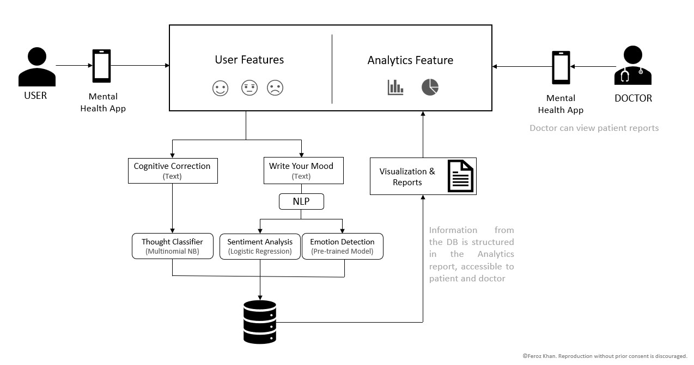

If you cannot explain your work, it's not taking you anywhere. Presenting complex ideas is an art I have mastered over the years. Below are curated samples:
Business 101: Axes Summary
Context: This chart compares different mental health solutions based on two factors, how smart they are and how easy they are to use. It highlights how my project, MindSpace, is both intelligent and user-friendly compared to existing options.
Impact: This visual makes it easy for anyone to see why MindSpace stands out. The simple layout and color contrast help leave a lasting impression on the audience.

Pitching Investors my Mental Health Analytics Project
Context: This diagram shows how the mental health app processes user inputs and turns them into actionable insights. The results are structured into reports that both users and doctors can access.
Impact: From the perspective of non-technical business stakeholder, this slide simplifies the flow and working of the application.
Explaining RAG Systems to Product Manager
Context: This slide visually explains how Retrieval-Augmented Generation (RAG) works in a simple way.
Impact: Without this slide, explaining RAG would require complex technical explanations, making it hard for non-technical stakeholders to grasp. This slide simplifies the concept, helping business leaders and decision-makers quickly understand how AI retrieves relevant information, making AI adoption easier.
Explain Map-Reduce Method to the CEO in 30 Seconds
Context: This slide explains how the system processes large amounts of text efficiently using a Map-Reduce approach. Instead of analyzing all data at once, it splits information into smaller chunks, processes them separately using an AI model, and then merges the most relevant insights to generate a final answer.
Impact: The CEO appreciates the technical team's work and allocates resources.
Client asks, "What is Text Mining?"
Context: This workflow shows how raw text data is collected, cleaned, and analyzed. It starts by scraping articles, then removes unnecessary elements, breaks text into words, and finally identifies key word patterns.
Impact: Simplifies understanding for non-technical audiences.
High-Level Data Pipeline Workflow
Context: This pipeline automates data collection, cleaning, and analysis of Mid-Day Meal Project, using machine learning to detect patterns and anomalies.
Impact: Clarifies to CTO various steps involved in building the project pipeline.
What's the difference between OLTP and OLTP?
Context: This slide visually explains the difference between OLTP (transactional systems) and OLAP (analytical systems). It shows how raw data flows from real-time business operations (Sales POS, CRM) into a data warehouse, where it is transformed and used for analytics and machine learning.
Impact: For a newbie, this slide makes it easy to differentiate roles—how software engineers handle transactions, data engineers manage data flow, and analysts extract insights. Instead of long explanations, this clear structure helps business and tech teams align faster.
My Boss Wants to Understand Multi-Agent Chatbot
Context: This slide explains how the chatbot decides where to fetch information from. When a user asks a question, a router directs it to either a Wiki search tool or a vector database, depending on the query type. The results are then refined by a large language model (LLM) for better accuracy.
Impact: My Boss is now tech-savvy!!
Work + No fun = Bad.
I turn into a passionate painter in my free time. It helps me to de-stress, focus and think creatively. Sometimes, I try to draw parallels between my work and art.

Abstract Clustering
About: Interplay of gradients and flow, capturing idea of clustering algorithms.
String Networks: The Flow of Connectivity
About: This string art represents interconnected hidden layers.